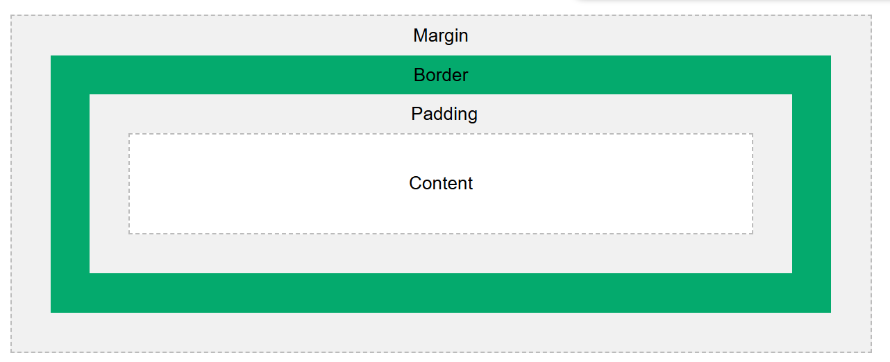

Formas de inserção de CSS
Há 3 forma de inserir o CSS no html:
-
CSS externo - É feito através de uma tag <link> dentro da tag <head> no HTML da sequinte forma:
<link rel="stylesheet" href="style.css"> com href apontando para um arquivo .css
-
CSS interno - É feito pela tag <style> dentro da tag <head>, dentro do prórpio HTML
-
CSS inline - É utilizado em um único elemento, basta colocar o atributo style="" contendo propriedades do CSS
Se um elemento possuir mais de uma definição CSS, Basta olhar as prioridades para saber qual será aplicada:
- Padrão do navegador (Menor prioridade)
- CSS externo e interno(O último a aparecer será o aplicado)
- CSS inline (Maior prioridade)
Estrutura do CSS
A estrutura do CSS é baseado em um seletor com uma declaração, que contém uma propriedade e um valor, ex:
p { /*seletor: Para todos elementos p, serão aplicadas font-size de 20px e color red*/
font-size: 20px; /*Cada linha possui a propriedade (font-size) e valor (20px)*/
color: red; /*propriedade: color -> valor: red*/
}
Seletores CSS
Seletores define o que você quer mudar de estilo
Seletor universal
para selecionar todos os elementos é ultizado o *, ex:
* {color: blue;} /*Seleciona todos os elementos e deixa a fonte de cor azul*/
Seletor de elementos
Seleciona através das tags HTML, basta escrever a tag ex:
h1 { /*Onde houver a tag h1, será aplicado uma cor de fundo preta com fonte branca*/
background-color: black;
color: white;
}
Seletor de classes
Seleciona a classe dos elementos pelo atributo class="", escreva a classe seguido de um ".", ex:
.codigo { /*Seleciona todos elementos que possuem a classe codigo e aplica o estilo neles*/
background-color: blue;
color white;
}
Seletor de id
Seleciona o id de um elemento pelo atributo id="", digite o id após um #, ex:
#inicio {font-size: 30px;} /*Seleciona o elemento que possui o id inicio e aplica estilo nele*/
Combinar seletores
É possivel combinar seletores para reduzir código como:
h1, h2, p {
text-align: center;
color: red;
}
Cores
É possivel utilizar cores através dos sistemas de nomes de cores, RGB, HEX, HSL, RGBA e HSLA
É possivel alterar cor de fundo, cor de texto e cores de bordas
h1{
background-color: black; /*Muda cor de fundo para preto*/
color: rgb(255, 255, 255); /*Muda cor do texto para branco*/
border:2px solid Violet; /*Adiciona uma borda de 2px sólida de cor violeta*/
}
Backgrounds
Propriedade backgrounds são usadas para adicionar efeitos de fundo em elementos
background-color
Muda a cor de fundo de um elemento. É possivel mudar a cor de fundo de qualquer elemento HTML
Ex: cor de fundo azul
opacity
Define a transparência de um elemento. Para não passar transparência para o texto usa-se rgba
background-image
Especifica uma imagem para usar como fundo de algum elemento
Ex: foto de fundo
Repetição de imagens no CSS
Por padrão imagens de fundo se repetem tanto horizontalmente como verticalmente. Clique para ver exemplo
Para fazer uma imagem se repetir somente horizontalmente utilizasse o background-repeat: repeat-x. Exemplo
Para fazer a imagem se repetir verticalmente, o processo é parecido: background-repeat: repeat-y. Exemplo
Para a imagem ser mostrada somente uma vez, especifica-se na propriedade background-repeat: no-repeat. Exemplo
É possivel determinar a posição da imagem de fundo com background-position:. Exemplo
Box model
É uma caixa que rodeia todo elemento. Essa caixa possui: Content(conteúdo), padding(preenchimento), borders(bordas) e margins(margens).

- Margin: Uma área transparente para distanciar elementos
- Border: Uma borda que rodeia o elemento
- Padding: Uma área transparente para distanciar a borda do conteúdo
- Content: Conteúdo do elemento, podendo ser uma imagem ou texto
Cálculos
div {
width: 320px;
height: 50px;
padding: 10px;
border: 5px solid gray;
margin: 0;
}
Cálculo de altura da div acima:
50px - height (altura do conteúdo)
20px (10px * 2) - padding (há padding em cima e em baixo)
10px - border (bordas em cima e embaixo)
50 + 20 + 10 = 80px de altura possui a div